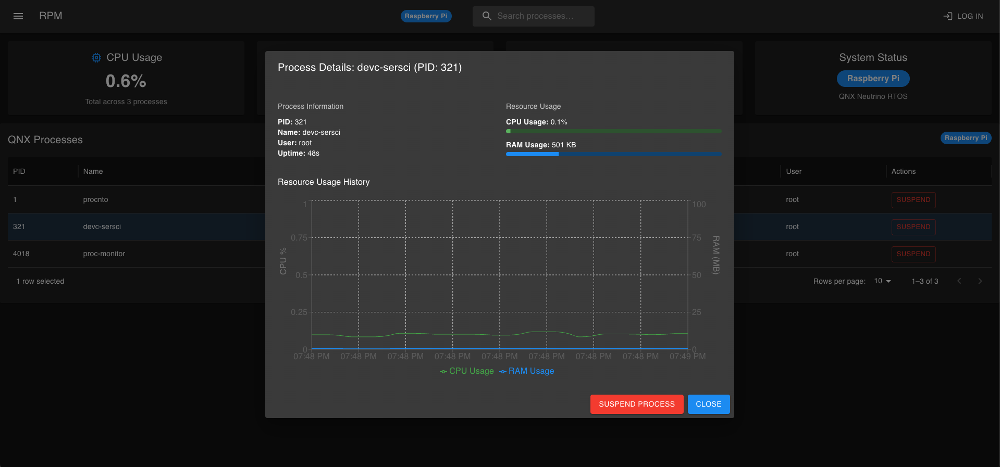

YADB (yet another database)
[GitHub] Yet Another Database (yadb) is a relational database that I am building from scratch using C++ to learn more about database internals.
Check out the blog if you are interested.
.obj Renderer

[GitHub] A small renderer that I built for the .obj file format commonly used in tools like Blender. Built using SDL3 and no graphics rendering APIs (such as OpenGL).
QNX Remote Process Monitor
[GitHub] Tool for developers using the QNX RTOS to remotely monitor processes running on their device while providing helpful time series data to track resource usage.